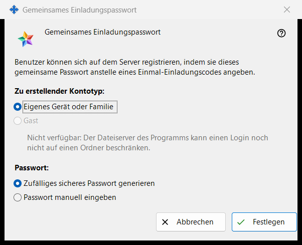
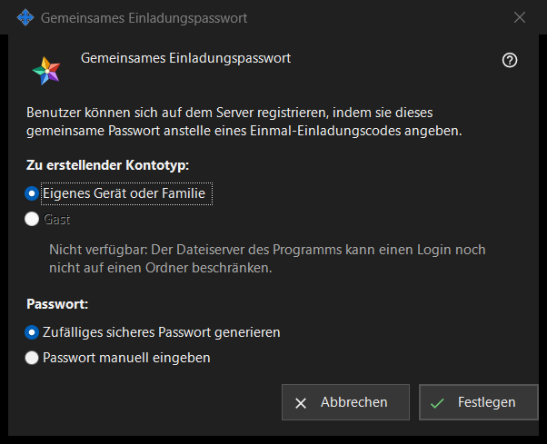

Gemeinsames Einladungspasswort
Verwendungszweck
In diesem Fenster können sich Benutzer mit einem gemeinsamen Passwort statt mit einem einmaligen Einladungscode auf dem Server registrieren. Sie öffnen es, indem Sie «Gemeinsames Einladungspasswort» in der Gruppe «Einladungen» der Einstellungen des Austauschservers aktivieren, oder mit «Gemeinsames Passwort festlegen..» daneben.


In dieser Reihenfolge
- Wählen Sie den Kontotyp.
- Wählen Sie, ob das Programm das Passwort erzeugt oder Sie es selbst eingeben.
- Klicken Sie auf «Festlegen».
- Wurde das Passwort erzeugt, kopieren Sie es aus dem Fenster, das es einmalig anzeigt.
- Um es nicht mehr zu akzeptieren, deaktivieren Sie «Gemeinsames Einladungspasswort» und bestätigen Sie.
Die Elemente
Kontotyp
«Zu erstellender Kontotyp:» bietet «Eigenes Gerät oder Familie» und «Gast» an. «Gast» ist deaktiviert, und die Zeile darunter nennt den Grund: Der Dateiserver des Programms kann ein Login nicht auf einen Ordner beschränken. Ist bereits ein gemeinsames Passwort aktiv, ist sein aktueller Typ vorgewählt. Ist dieser vorhandene Typ Gast, ist «Festlegen» deaktiviert; das gemeinsame Passwort lässt sich trotzdem ausschalten.
Passwort
«Passwort:» bietet «Zufälliges sicheres Passwort generieren» (standardmäßig gewählt) und «Passwort manuell eingeben» an. Nach «Festlegen» wird ein eingegebenes Passwort in einem Passwortfenster abgefragt, das die Richtlinie prüft: mindestens 10 Zeichen mit einem lateinischen Großbuchstaben, einem lateinischen Kleinbuchstaben und einer Ziffer. Wenn Sie dieses Fenster abbrechen, kehren Sie hierher zurück.
Festlegen
«Festlegen» sendet das Passwort und den Kontotyp an den Server und schaltet das gemeinsame Passwort ein; die Seite zeigt «Gemeinsames Einladungspasswort gespeichert und aktiviert.» und die Statuszeile unter dem Kontrollkästchen lautet «Gemeinsames Passwort aktiviert (Kontotyp: ..).» Ein erzeugtes Passwort wird einmalig in einem eigenen Fenster angezeigt: Kopieren Sie es dort, es lässt sich nicht erneut lesen. Jeder, der das Passwort kennt, kann ein Konto des gewählten Typs registrieren; geben Sie es daher nur an Personen weiter, die Sie zulassen möchten.
Ausschalten
Wenn Sie das Kontrollkästchen deaktivieren, lautet die Frage «Gemeinsames Einladungspasswort deaktivieren? Neue Registrierungen damit sind dann nicht mehr möglich.» Die Standardantwort ist Nein. Nach Ja zeigt die Seite «Gemeinsames Einladungspasswort deaktiviert.» und die Statuszeile lautet «Gemeinsames Passwort deaktiviert.»
Abbrechen
«Abbrechen» oder Esc schließt das Fenster und ändert nichts. Haben Sie es durch Aktivieren des Kontrollkästchens geöffnet, kehrt das Kontrollkästchen in seinen vorherigen Zustand zurück.
Managereinstellungen · SFTP-Freigabeeinstellungen · Einstellungen des Austauschservers